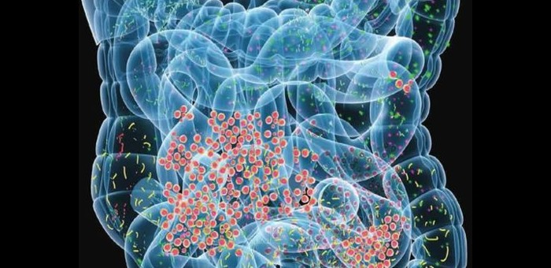

Le microbiote : KESAKO ?
Cela représente tous les micro-organismes vivants (bactéries +++, champignons et virus inoffensifs) dans notre tube digestif, surtout localisés au niveau du côlon (gros intestin).
C’est une des clés majeur de notre santé, dont les bienfaits ont été découverts il y a peu
Cela représente tous les micro-organismes vivants (bactéries +++, champignons et virus inoffensifs) dans notre tube digestif, surtout localisés au niveau du côlon (gros intestin).
Nous avons chacun plusieurs centaines d’espèces de bactéries.
Chaque microbiote est unique dans la mesure ou chacun possède une combinaison de variétés différente
Il assure plusieurs fonctions dont :
La digestion des fibres et certaines formes de sucres
La protection contre l’invasion des micro-organismes pathogènes
La prévention de certaines pathologies chroniques telles que le diabète de type 2, l’obésité, les maladies cardiovasculaire, du foi, du rein…
L’activation et l’influence du système immunitaire
L’interaction avec le cerveau (notamment sur les sensations de faim et de satiété)
La composition de notre flore intestinale peut varier selon notre mode de vie. Par exemple, en cas de stress, fatigue, alimentation déséquilibrée, prises d’antibiotiques, consommation de tabac, alcool, le nombre de bactéries et de variétés va diminuer
Notre Kombucha D’TOX apporte certaines de ces bactéries et levures qui colonisent notre intestin mais également des acides et des substances qui serviront de « nourritures » à ces micro-organismes, permettant ainsi leur colonisation ET leur bon fonctionnement.